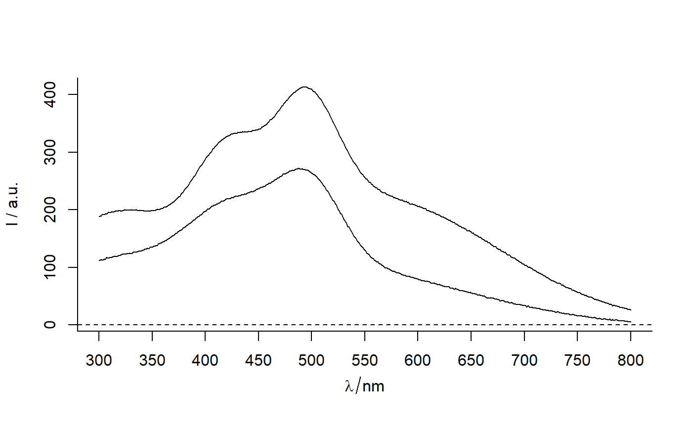
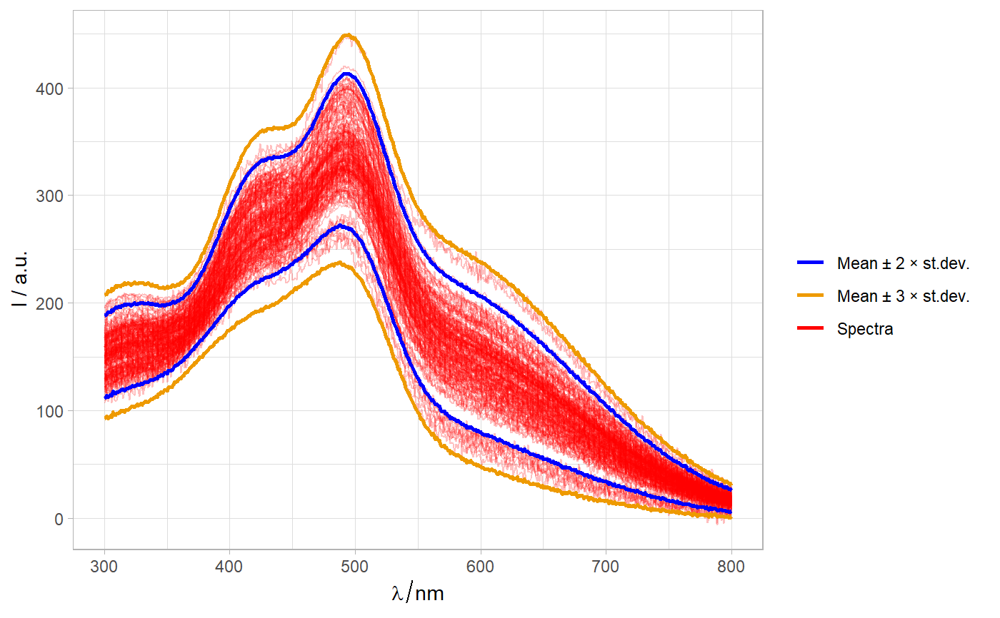

mean_Nsd.RdFunction finds spectra that represent mean +/- n standard deiations
and adds column .name.
mean_Nsd(sp, n = 2, plus.minus = TRUE)
| sp |
|
|---|---|
| n | Number of standard deviations, i.e. value of z-score. |
| plus.minus | Logical. If |
A hyperSpec object with spectra at mean(sp) ± n*sd(sp).
scale, outside_mean_pm_Nsd, mean_sd
Other spHelper functions for spectroscopy and hyperSpec: IQR_outliers,
binning, file,
gapDer, hy2mat,
hyAdd_Label_wl,
hyAdd_Labels_PAP_PD_2014,
hyAdd_Labels_TD2009, hyAdd,
hyDrop_NA, hyGet_palette,
hyRm_palette, mad_outliers,
median_Nmad, plot_hyPalette,
prepare_PAP_RK_2014__MATLAB_failui,
read.OOIBase32,
read.OceanView.header,
read.OceanView, read.sp.csv2,
read3csv2hy, replace_spc,
sd_outliers, spStat,
sp_class_perform
data(Spectra2) Margins <- mean_Nsd(Spectra2) Margins3 <- mean_Nsd(Spectra2, n = 3) plotspc(Margins)# Plot data and margins ======================================= Marg2 <- as.long.df(Margins, rownames = TRUE, na.rm = FALSE) Marg3 <- as.long.df(Margins3, rownames = TRUE, na.rm = FALSE) Spectra2$.name <- factor("Spectra") qplotspc(Spectra2, spc.nmax = nrow(Spectra2), mapping = aes(x = .wavelength, y = spc, group = .rownames, color = .name), alpha = .25) + theme_light() + geom_line(data = Marg2, aes(color = .name), lwd = 1) + geom_line(data = Marg3, aes(color = .name), lwd = 1) + scale_color_manual(" ", values = c("blue","orange2", "red")) + scale_alpha_manual(" ", values = ".2", guide = FALSE)